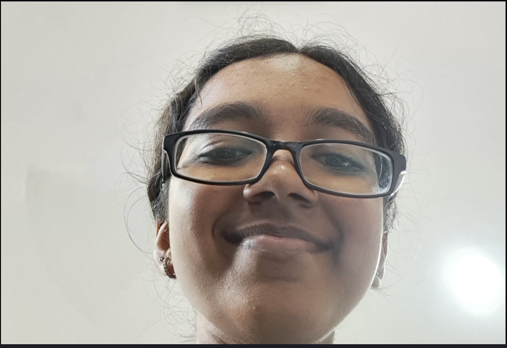
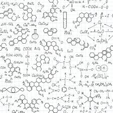
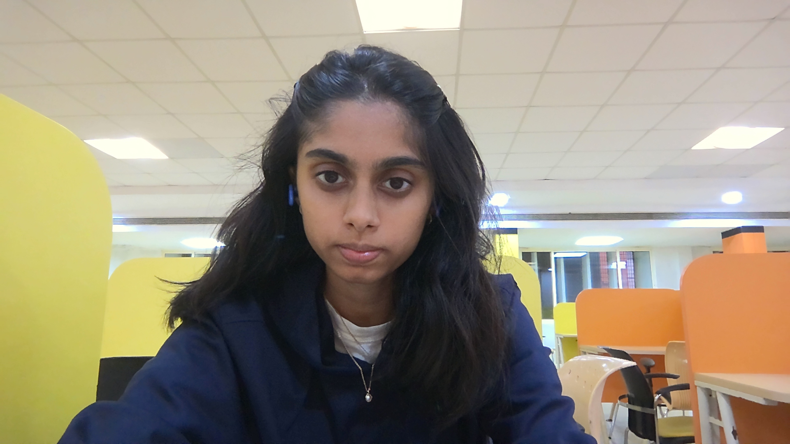
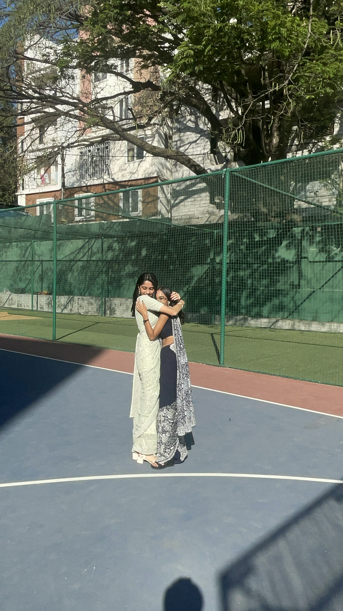
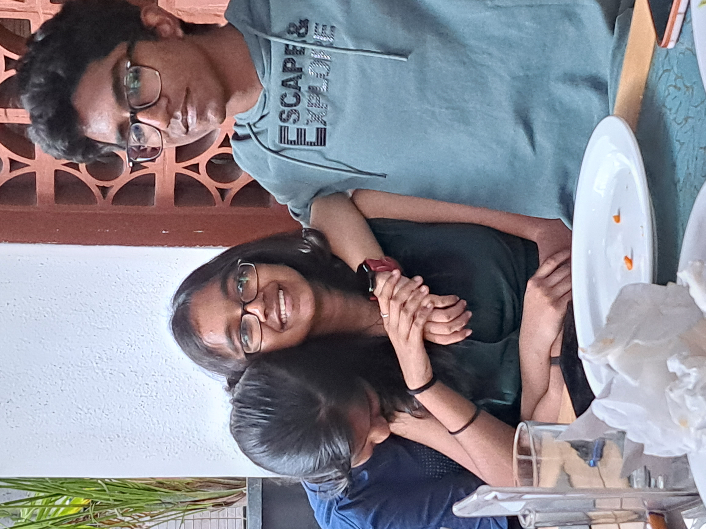
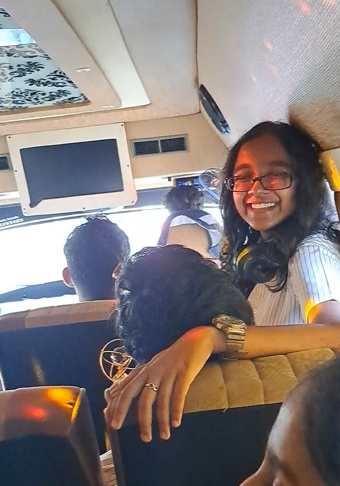

There is this girl Mansi and she is awesome. In so many ways. We all tend
to forget it sometimes, and more importantly (and annoyingly) so does the
aforementioned Mansi. As I said, she's an awesome genius, but she can be
pretty stupid too <3 So this is a little reminder of a very tiny part
of her unending ever-expanding awesomeness!!

ITS MANSI!!
A SHORT DESCRIPTION OF SUBJECT MATTER
The following is a systematic description of the subject matter being
commented upon here:
NAME: MANSI HIREMATH SHESOCUTE
SPECIES: suspected to be HOMOSAPIEN but highly suspicious
WEAKNESS: jhumkas, bollywood music, arushi, good sleep schedules, organic chem books
RARITY: ONE IN A BILLION
Photo gallery:
JhumkasDancing

Organic Chem

Arushi
WHY WE LOVE MANSI
1. She is very very tiny
This girl is miniscule. She can fit in my pocket. It is always very
fun to see this rolling tiny ball of excitement, bubbliness or
especially anger! The tiny little mansi.
2. She is very very huggabe

A hug from mansi is a warm embrace from the sun. Its life giving, its
warm, its perfect, its so so tight. You never want to let go, because
man; you never feel quite as comfortable.
3. She is the best to study with.
With the best handwriting, best highlighters, best pens that she has
been developing for years? Yes. These are the best notes. And they
make studying so aesthetic. So does she; with her perfectly planned
timetables (that she definitely sticks to), her gorgeous green wall
during zoom sessions she will always get on, and determination to
sneak in extra centum maths questions in every class.
4. She has the voice of an angel.
Sing to me always darling, and I'll sing along.
5. She is very silly.
Mansi is very silly. She says stupid stuff. She feels silly things.
She does silly dancing. She, tiny tiny mansi, tries to carry me. She
is a carrot rabbit. She is silly silly silly omg ilysm.
6. She creates such beautiful things
She's made gorgeous dresses, immaculate designs, pretty pretty drawing
and such soulful poetry. She tears us all apart with her words and
letters; yet we read them again and again because they are so
beautiful. She never lets go of her creativity, it will always thrive!
7. She cares so determinedly

Mansi will not let go—she will hold on so tight, you'll always know
she's there. She is a determined girl, if she chooses to be. She is so
determined to care so much, sometimes it hurts her. But then again,
would it be a mansi if she didn't give it her heart and soul?
8. She makes you think the world's a nice place to live.

Why do you do this Mansi. Add splashes of colour to this world, add
trust and comfort to this world, make me feel pride swelling in my
heart for your dreams coming true, make this place livable. Something
I look forward to waking up to every day, just so I can see your
face?